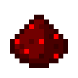
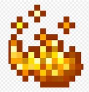

Fungo do Nether
Fungo do Nether- Lágrima de Ghast
Restaura 36♥ × 18 (48♥ × 24) de saúde ao
longo do tempo, 1(♥) a cada 50 ticks (2,5 segundos).
 Olho de Aranha Fermentado
Olho de Aranha Fermentado- Pó de Redstone
Reduz o dano corpo a corpo em 4(♥♥).
Reduz o dano corpo a corpo em 0,5 (0,25 coração).
- Fungo do Nether
- Pó de Blaze
Aumenta o dano corpo a corpo em 3♥♥.
Aumentado o dano corpo a corpo em 130%.